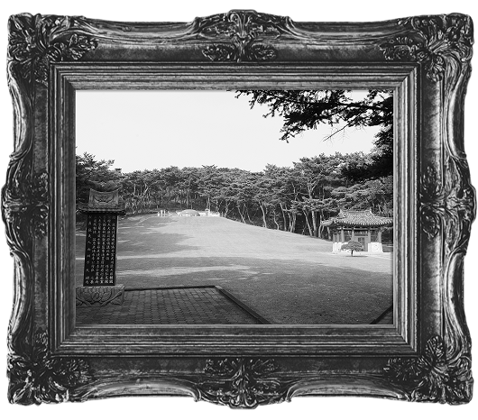
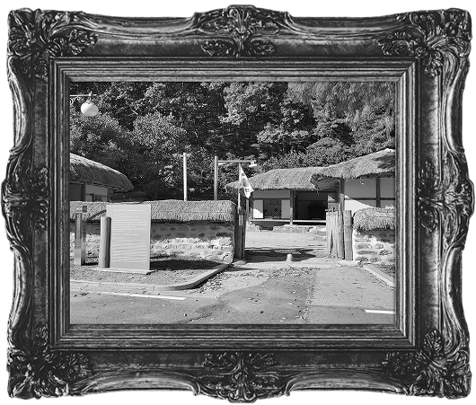
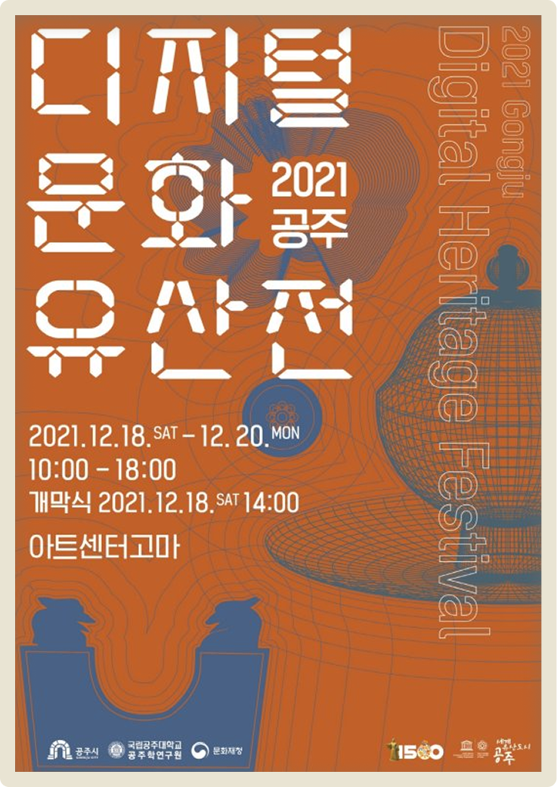

문화유산 소개
문화유산의 기록들
VIEW

유관순 열사 유적
금강변 야산의 계곡을 둘러싼 산성으로, 원래는 흙으로 쌓은 토성이었으나 조선시대에 석성으로 고쳤다. 쌓은 연대는 정확하지 않으며, 백제 때에는 웅진성으로, 고려시대에는 공주산성·공산성으로, 조선 인조 이후에는 쌍수산성으로 불렀다.

윤봉길 의사 유적
광현당과 저한당에서 성장하며 농촌 계몽운동과 문맹퇴치에 힘썼고 1932년 상하이 홍구공원에서 ‘4·29 의거’를 일으켜 항일 독립운동에 큰 영향을 미쳤으며 이후 체포되어 25세에 순국하였다.

아산 이충무공묘
현재 아산에 위치한 충무공 이순신의 장군의 무덤이며 임진왜란 때 거북선을 활용해 한산도 · 노량 등 해전에서 승리를 이끌었으나 노량해전에서 전사하였다.

김좌진 장군 생가지
충청남도 홍성 출신으로 대한제국 후기의 독립운동가이며 청산리전투를 승리로 이끈 독립군 지휘관으로 만주에서 항일투쟁에 헌신하다 1930년에 순국하였다.
SINCE 2003
유네스코는 ‘디지털 유산의 보존에 대한 헌장’을 제정하며
‘디지털 헤리티지’라는 개념 정립
사라진 문화유산을 가상현실(VR)
"증강현실(AR) 기술을 통해 복원 성공"
유네스코는 ‘디지털 유산의 보존에 대한 헌장’을 제정하며
‘디지털 헤리티지’라는 개념 정립
